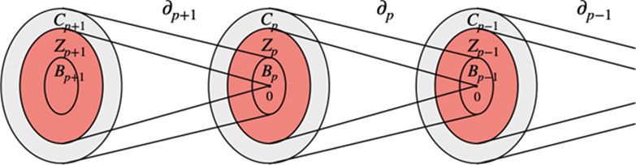

Cicli e confini
Due sottospazi altamente utili sono contenuti all'interno di ogni spazio $C_p$ delle catene: i sottospazi dei cicli e dei confini.
Definizione Catene, cicli e sottospazi di confine:
Un $p-ciclo$ è definito come una $p-catena$ senza confine, per cui è un elemento del kernel $Z_p$ di $\delta_p$ (gli insiemi rossi della figura). Un p-confine (p-boundary) è una p-catena che è il confine di una (p+1)-catena, per cui è un elemento dell'immagine $B_p$ di $\delta_(p+1)$. L'insieme $B_p$ è un sottoinsieme del kernel di $\delta_p$, poiché il confine del confine è vuoto.

Proprietà le colonne della matrice $\delta_3^+$ sono 2-cicli. L'algoritmo che implementeremo, cioè il topological-gift-wrapping TGW in 3D, produce la matrice sparsa [$\delta_3^+$], proprio partendo dalla matrice sparsa [$\delta_2$]. Più in generale, ogni colonna delle matrici di confine, è un 2-ciclo.
Proprietà la somma delle righe di $\delta_3$ è zero.